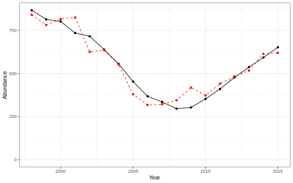

3.1 Abundance
3.1.1 Generalized linear model
This is an exploratory fit of a poisson GLM. Initial covariates were included based on statistical significance at a Bonferroni-corrected alpha in the linear correlations shown in this report. Final covariates were chosen by forward stepwise AIC selection of additive GLMs, with the maximum number of steps limited to the number of data points divided by two.
| rnames | Estimate | Std. Error | z value | Pr(>|z|) |
|---|---|---|---|---|
| (Intercept) | -63 | 17.2 | -3.66 | 0.000257 |
| WEEKLY PPD RATIO ANOMALY week 31 |
-3.94 | 0.439 | -8.97 | 2.88e-19 |
| recreational CPUE number of fish caught per day fished all species |
0.402 | 0.0521 | 7.72 | 1.17e-14 |
| MONTHLY PPD MEDIAN month 08 gCarbon m 2 Day |
-1.67 | 0.2 | -8.35 | 6.68e-17 |
| WEEKLY PPD MEDIAN week 31 gCarbon m 2 Day |
3.38 | 0.446 | 7.57 | 3.66e-14 |
| northern latitude | 0.00732 | 0.0405 | 0.181 | 0.856 |
| Latitude degreesN | 1.99 | 0.518 | 3.83 | 0.000127 |
| WEEKLY PPD RATIO ANOMALY week 30 |
-0.933 | 0.282 | -3.31 | 0.000934 |
| along shelf distance km |
-0.0118 | 0.0036 | -3.29 | 0.00102 |
| Warm Core Rings n | 0.00625 | 0.00292 | 2.14 | 0.0324 |
Dropped coefficients:
, Longitude_degreesW MONTHLY_PPD_MEDIAN_month_07_gCarbon_m_2_Day Recruitment

Figure 3.1: Predicted (dashed red) and actual (solid black) response variable over time